How to make a grid in QGIS
In this blog post, we’ll explore how to make a grid in QGIS.
Intro
For this blog’s post, we would create a grid over a specific area of the Baltic Sea, which can be used to summarise and analyse values within defined cells, for example, 10 × 10 km.
To ensure the grid is as accurate and precise as possible, it is important to select the most appropriate CRS for the study area, as this determines how distances, areas, and grid cells are represented spatially.
CRS
For the example of the Baltic Sea, in QGIS, go to Project → Properties → CRS, search for EPSG:25833, select ETRS89 / UTM zone 33N, and click Apply → OK.
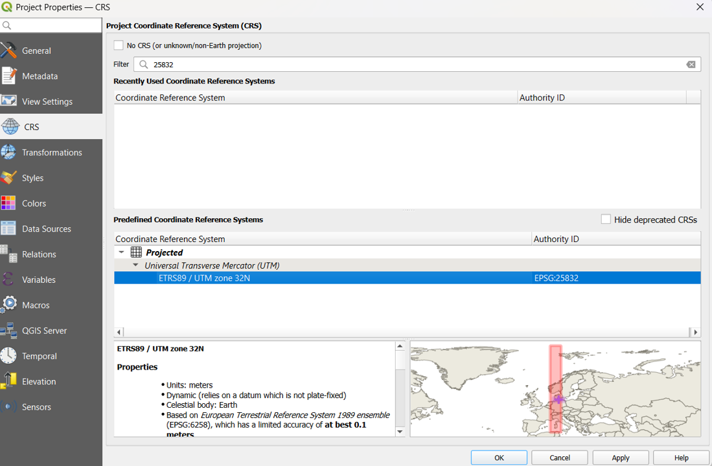
To access QGIS’s tools for creating and processing spatial data, go to Processing → Toolbox to open the Processing Toolbox.
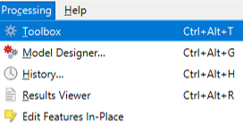
To open the tool that allows you to generate a regular grid over your selected study area, go to Vector Creation → Create Grid .
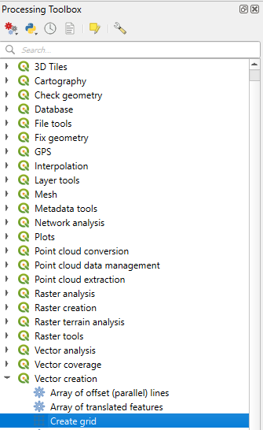
Extent
Set the Grid type to Polygon and define the grid size by setting both Horizontal spacing and Vertical spacing.
For the example, it was set to 5,000 metres (or 5 km, depending on the units shown).
Under Grid extent, for the example of the Baltic sea, we used 4279535.3145,4652816.7888,3387514.8389,3650496.8221 [EPSG:3035], alternatively you can select an existing vector layer or create a vector covering your area of interest.
Note that if the process takes too long, you may have selected an unnecessarily large area for such a small grid size.
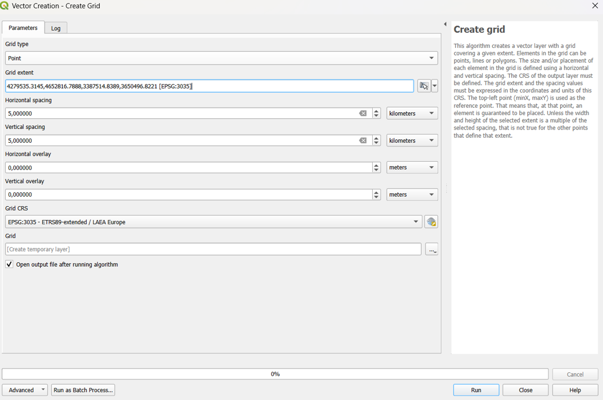
When the process is finished, the progress bar will display “Complete”, indicating that the grid has been successfully created.
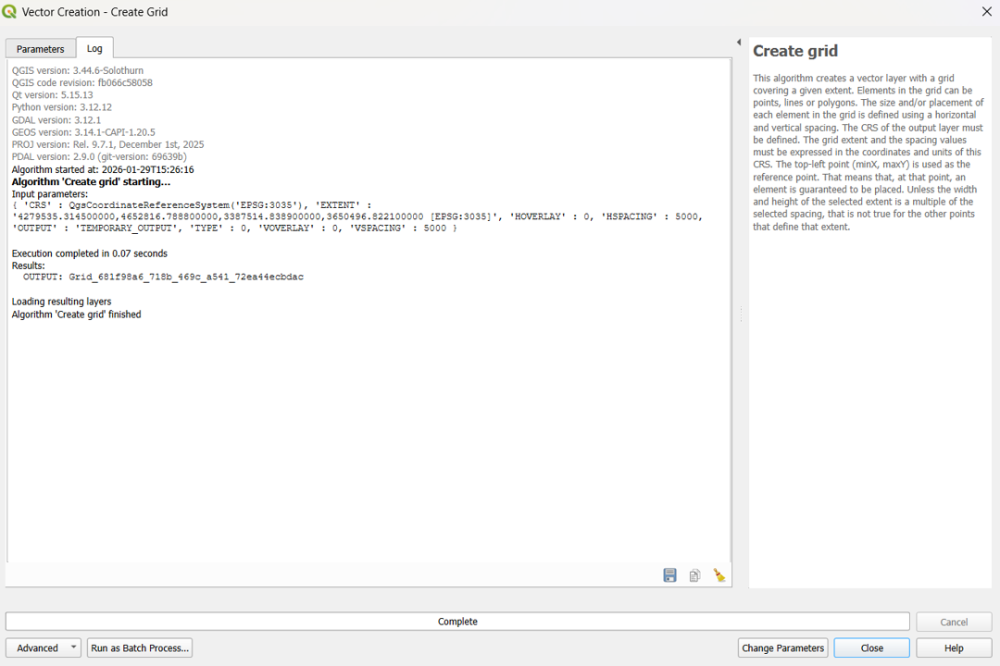
Merge lines to polygon
The grid will initially cover a larger area, but you can clip it to the maritime boundaries of a specific country; to do this, you first need a polygon representing the territorial waters.
This polygon can be created by selecting the Maritime Boundary and Territorial Waters layer, opening the Attribute Table, deleting the features that are not relevant to the Baltic Sea, and click Delete Selected Features to remove them.
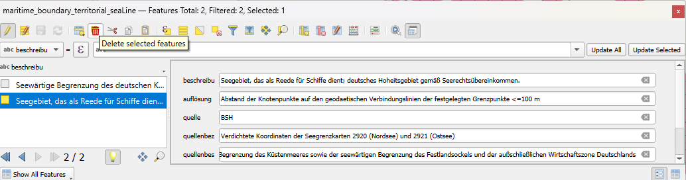
Combine the two layers into a single layer by going to Processing → Toolbox → Vector General → Merge Vector Layers, selecting both layers, and running the tool.
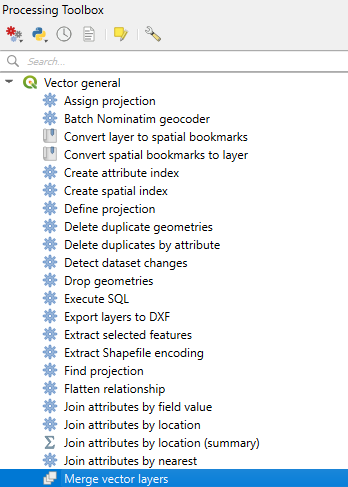
Then, use Dissolve to merge the boundaries into a single continuous layer; make sure that all lines touch perfectly, and if there are any gaps, adjust them using the Vertex Tool; finally, use Polygonize to convert the closed lines into polygons.
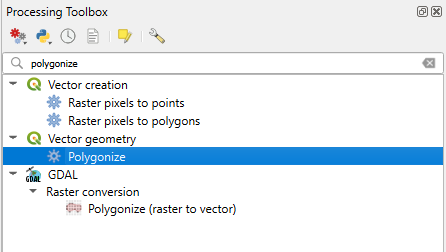
You should now have a polygon representing the maritime area of interest, which can be used to clip the grid to the desired boundaries.
Only keep grids that cross the area of interest.
To keep only the grid cells that overlap the area of interest, go to Processing → Toolbox → Vector Overlay → Intersection, select the grid as the input layer and the area-of-interest polygon as the overlay layer, and run the tool.
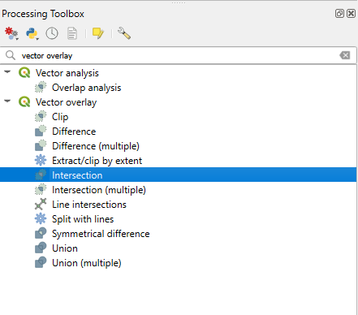
The order of the layers is important, so make sure the grid is selected as the Input layer and the area-of-interest polygon as the Overlay layer before running the Intersection tool.
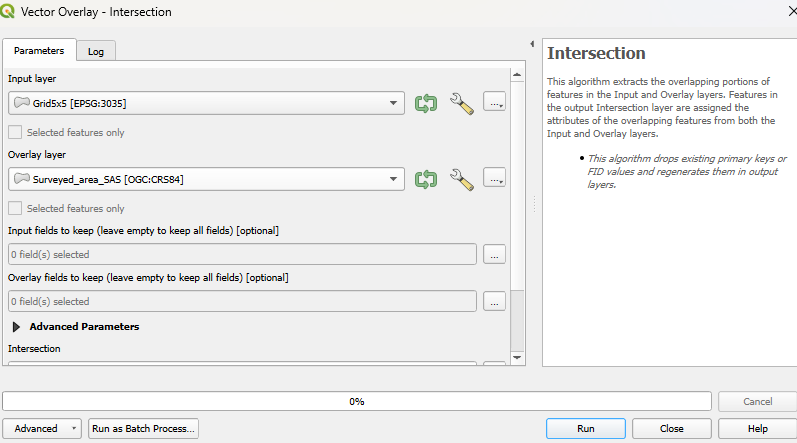
Layout
Finally, you should have a gridded map covering the German territorial waters; this grid can then be used to extract spatial values, calculate densities, summarise data, and perform further spatial analyses for each grid cell.
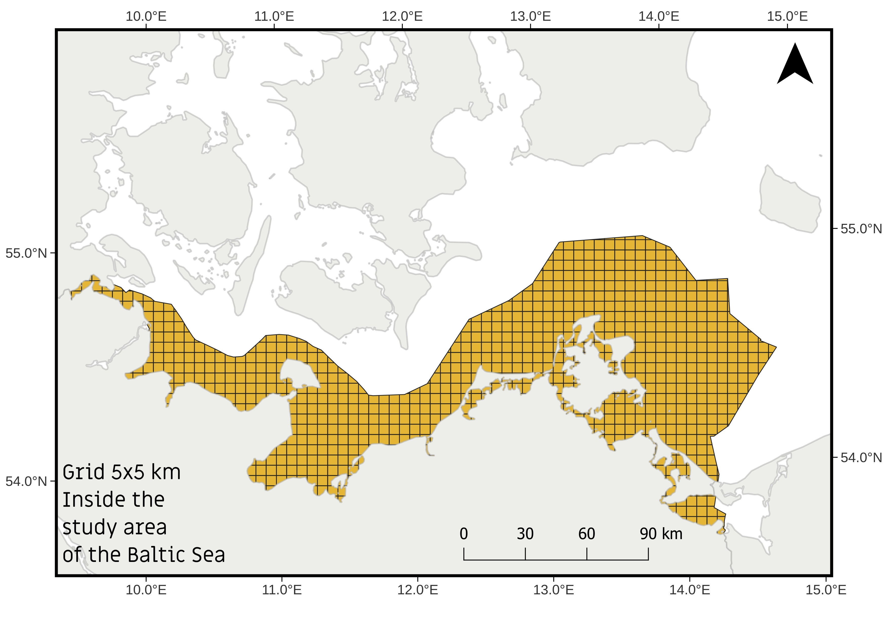